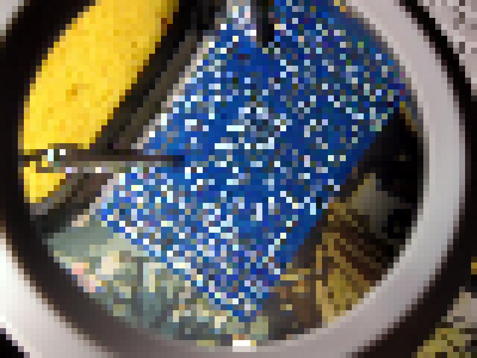
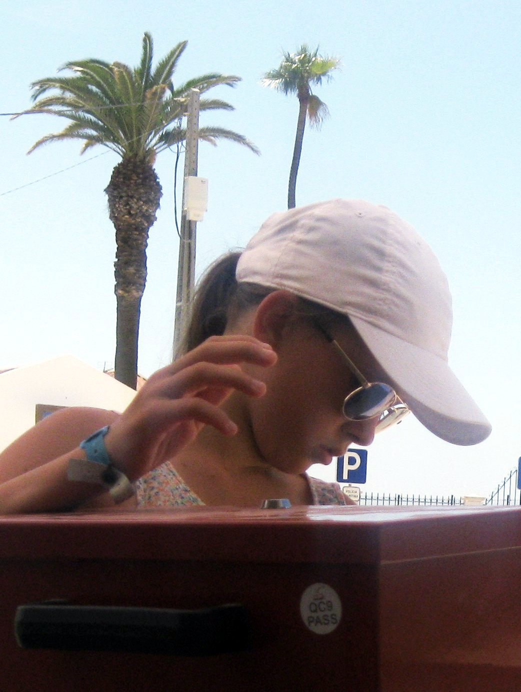
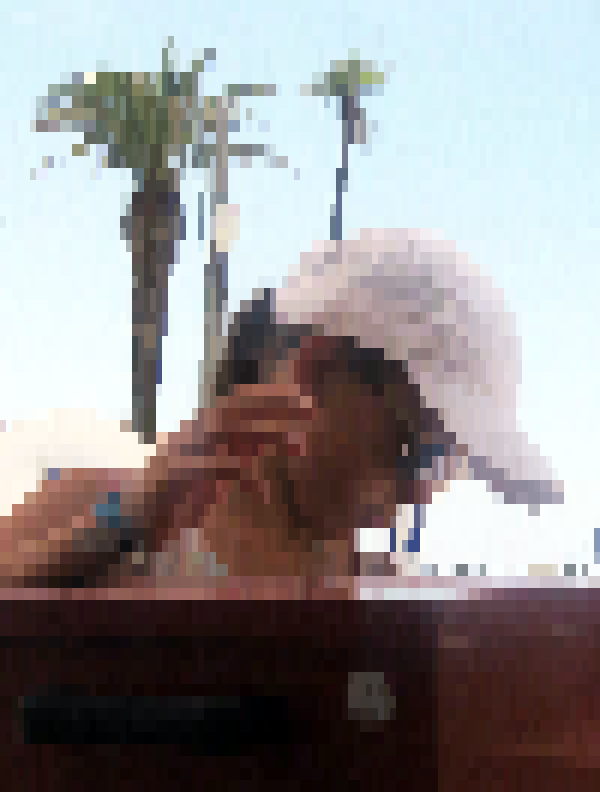
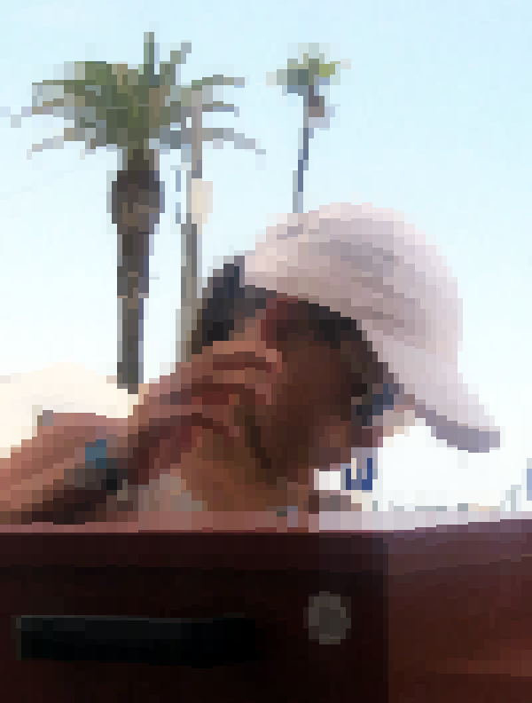
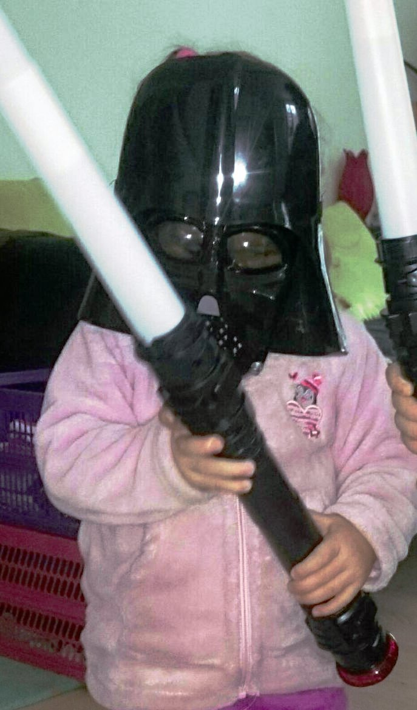
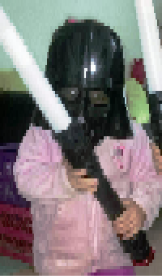

catiprimary
Simple CLI for rendering single files, multiple files, and directories. This is the main target for algorithm tuning, resilience, integration tests, and preflight checks.
cati is the focused CLI for rendering image files and directories in your terminal. The media player and browser now live in separate binaries, so the core renderer and public Go library can stay small and reliable.
Core rendering first. Optional media and browser tools when you need them.
Each terminal cell encodes two vertical pixels using ▀ ▄ █ and 24-bit true-color ANSI, doubling effective vertical resolution.
catiplay handles videos and image sequences. cati play remains as a compatibility forwarder.
Render PNG, JPEG, GIF, WebP, and SVG. SVGs are rasterized at the target display size with browser-like absolute CSS units.
catibrowse previews directories and opens selected assets through catiplay. cati browse forwards to it.
Detects terminal size via TIOCGWINSZ and scales media down to fit perfectly — content never breaks your layout.
Use the renderer directly from Go through the versioned v1 packages for terminal UIs and tooling.
The split keeps core rendering work from being slowed down by optional TUI features.
catiprimarySimple CLI for rendering single files, multiple files, and directories. This is the main target for algorithm tuning, resilience, integration tests, and preflight checks.
catiplayoptionalTerminal media player for videos and image sequences. It is built and installed, but its heavier tests are guarded behind an explicit Go build tag.
catibrowsedemoDirectory browser with previews. It demonstrates what can be built on top of the public library and launches catiplay for selected assets.
Unicode block characters divide a terminal cell into a top half and a bottom half. Setting foreground and background colors independently lets each cell encode two pixel rows.
Combined with 24-bit ANSI escape sequences
(ESC[38;2;R;G;Bm),
cati achieves full true-color rendering with no image protocol required.
| Char | Top half | Bottom half |
|---|---|---|
| ▀ | fg color | bg color |
| ▄ | bg color | fg color |
| █ | fg color | fg color |
| ⎵ | transparent | transparent |
24×14 source pixels → 24×7 terminal cells
Compare the same samples across the full rendering ladder. The stack stays live, but the spark layer is the one doing the least work per cell.
Drag any preview inside its frame to pan it.






$ cati photo.png $ cati logo.svg $ cati screenshots/
$ catibrowse folder/ $ cati browse folder/ $ cati browse file1.png file2.jpg
$ catiplay frames/ $ catiplay --fps 30 video.webm $ cati play --fps 4 assets/
$ cati play video.webm $ cati browse folder/ $ cati --play assets/ # legacy $ cati -i folder/ # legacy
Requires Go 1.25+
# install the commands $ go install ubunatic.com/cati/cmd/cati@latest $ go install ubunatic.com/cati/cmd/catiplay@latest $ go install ubunatic.com/cati/cmd/catibrowse@latest # try it $ cati logo.svg $ catiplay --fps 4 assets/
Integrate high-performance terminal rendering directly into your Go TUIs
package main
import (
"fmt"
"image"
"image/color"
"os"
"ubunatic.com/cati/v1/halfblock"
"ubunatic.com/cati/v1/quadblock"
)
func main() {
// Create a simple test image (a diagonal red line on blue background)
img := image.NewRGBA(image.Rect(0, 0, 40, 40))
for y := 0; y < 40; y++ {
for x := 0; x < 40; x++ {
if x == y {
img.Set(x, y, color.RGBA{R: 255, G: 0, B: 0, A: 255})
} else {
img.Set(x, y, color.RGBA{R: 0, G: 0, B: 255, A: 255})
}
}
}
fmt.Println("--- Example 1: Rendering ANSI directly to Stdout ---")
// Render using the halfblock algorithm at 20 terminal columns width.
// Width is mandatory (20). Height is unconstrained (Opts.Rows = 0).
err := halfblock.Render(os.Stdout, img, 20, halfblock.Options{})
if err != nil {
fmt.Fprintf(os.Stderr, "Error rendering: %v\n", err)
os.Exit(1)
}
fmt.Println("\n--- Example 2: Rendering to a core.Grid (for TUIs) ---")
// Render using the quadblock algorithm with edge-snap enabled.
opts := quadblock.Options{
EdgeSnap: true,
}
grid, err := quadblock.RenderToGrid(img, 20, opts)
if err != nil {
fmt.Fprintf(os.Stderr, "Error rendering to grid: %v\n", err)
os.Exit(1)
}
// Print out the grid cell runes (ignoring colors for simplicity in stdout)
for y, row := range grid.Cells {
fmt.Printf("Row %02d: ", y)
for _, cell := range row {
fmt.Printf("%c", cell.Ch)
}
fmt.Println()
}
}